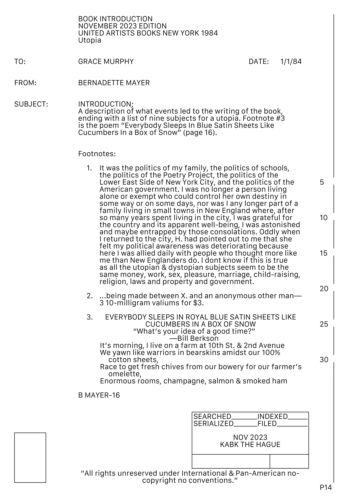
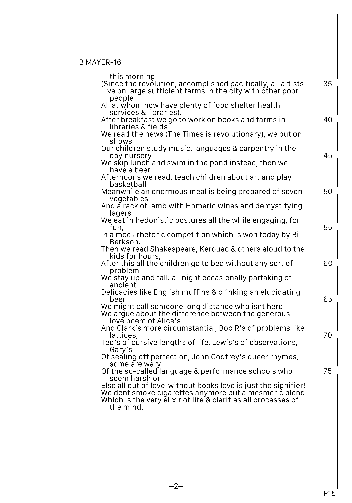
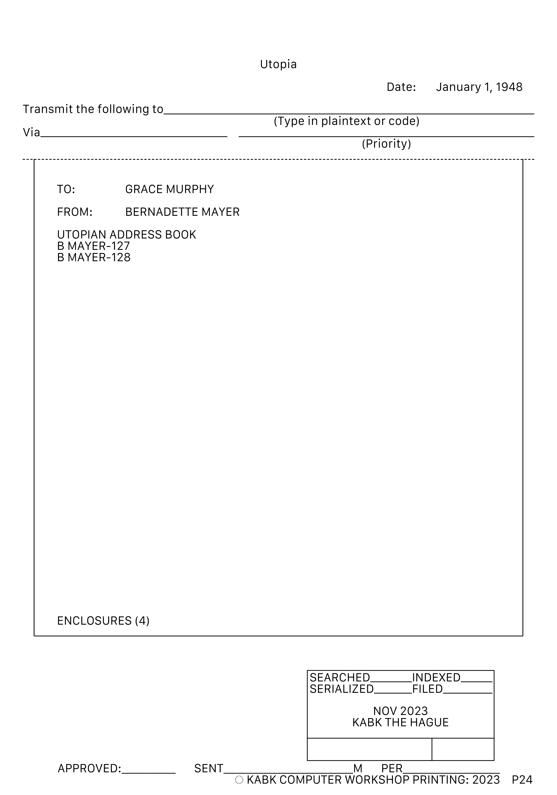
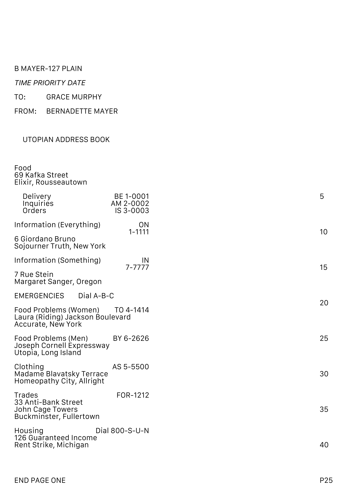
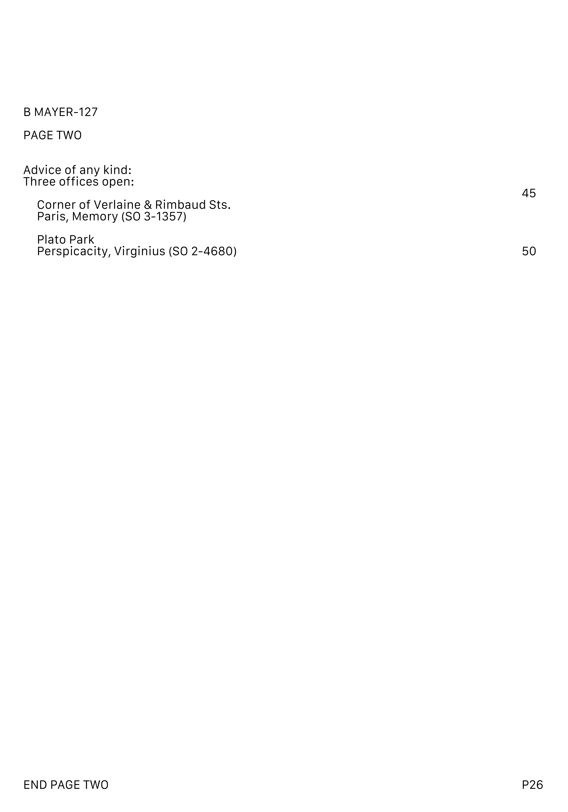
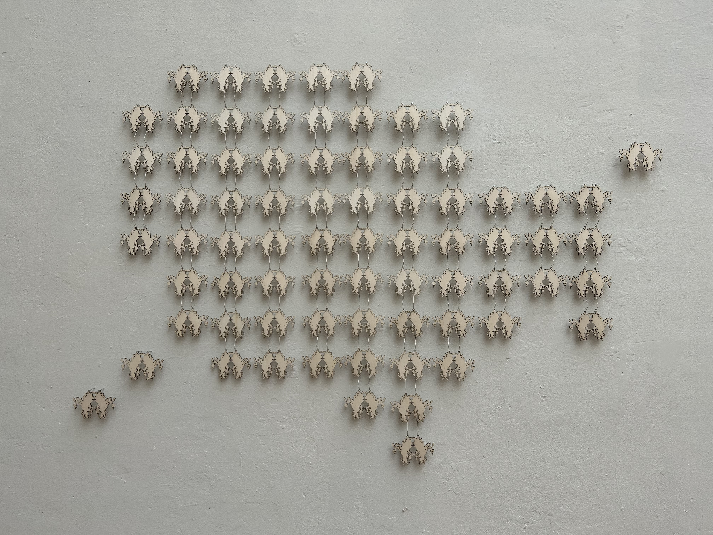
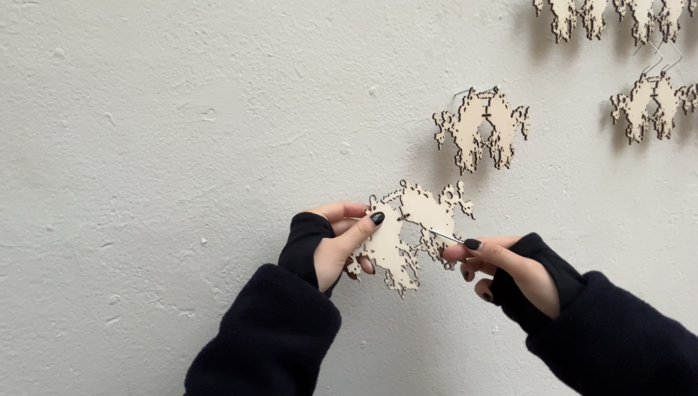

A typographic redesign of Bernadette Mayer's novel
'Utopia'. Inspired by the typographic appearance of FBI documents, this project features
'Utopia' as a series of bureaucratic documents, each chapter organised into a neat folder,
and wooden chainmail textile installation featuring composed of 74 rorschach-inspired icons.
The photographs attached to each folder were shot by Bernadette Mayer herself.
Installation & Documents
31 pages (5 folders) | 225 × 310 mm | English
The Hague, Netherlands · December 2023
74 lasercut 3mm birch panel